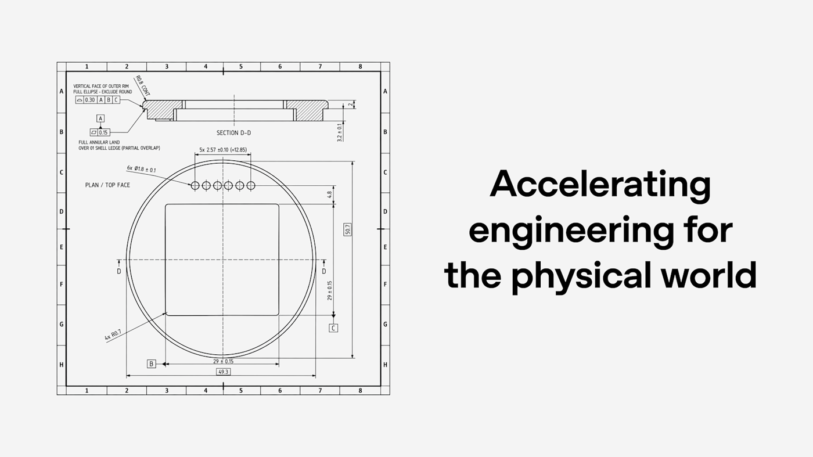
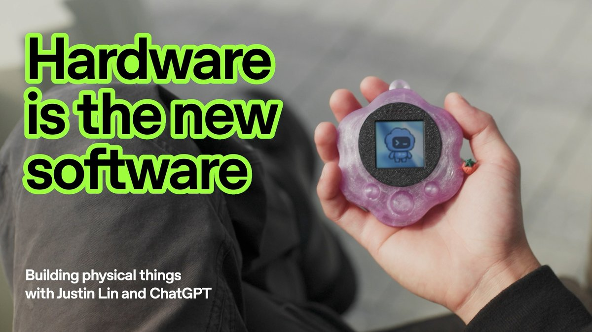
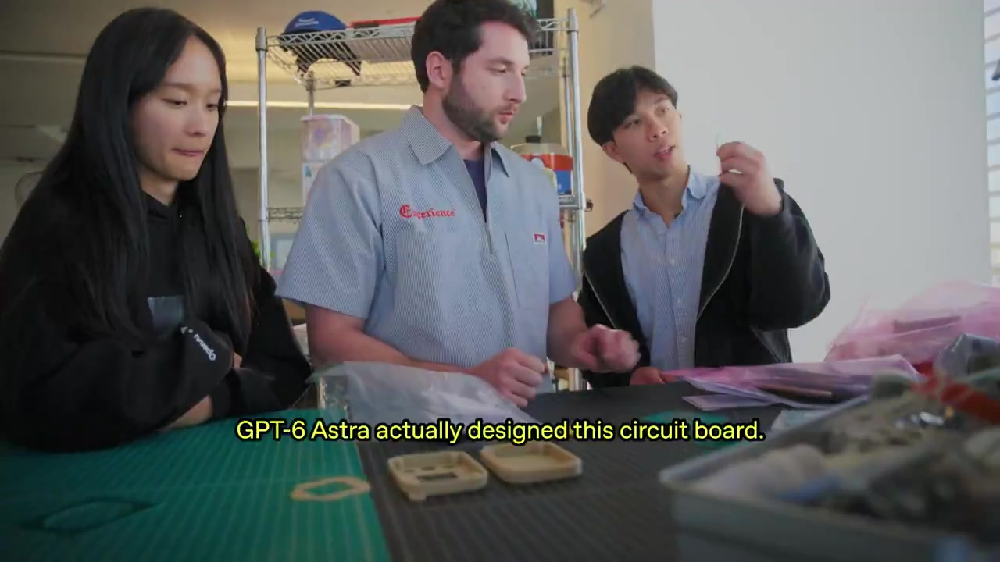
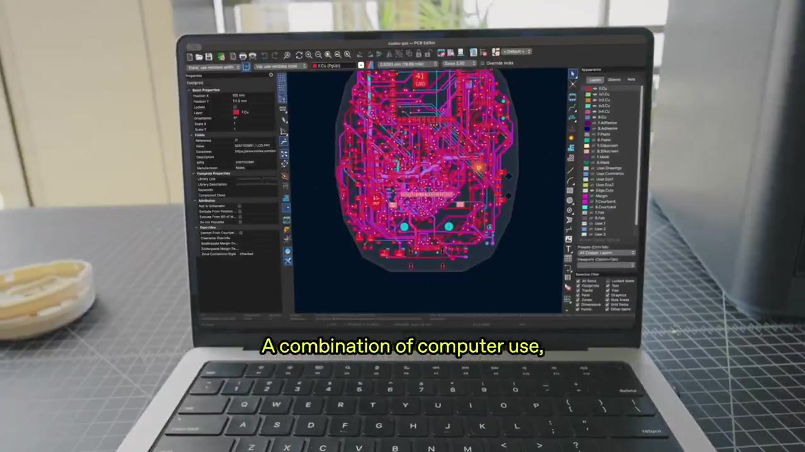
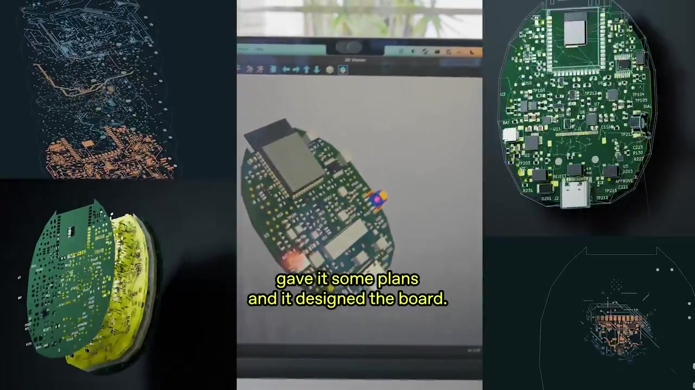
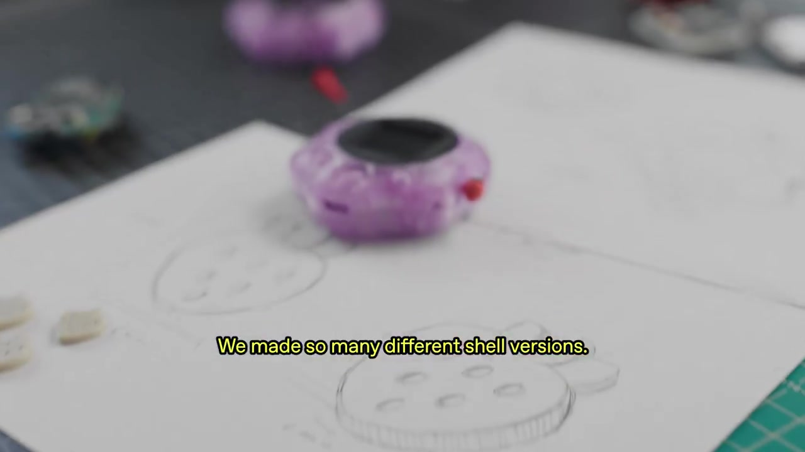
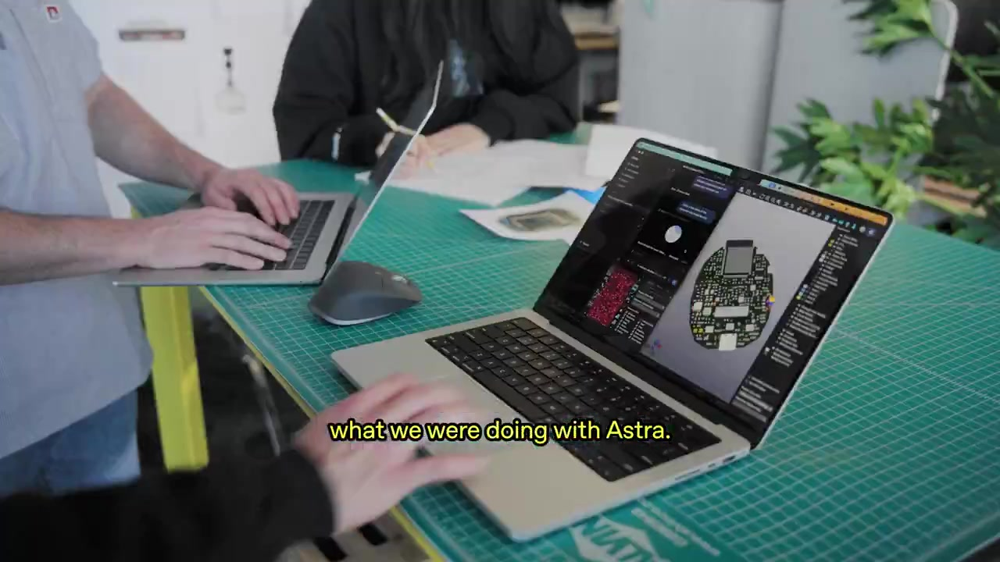

ChatGPT & Codex cho kỹ thuật thế giới vật lý — và cách thiết kế / tự làm mạch PCB kiểu Codex pet
Bản dịch / diễn giải tiếng Việt dựa trên bài đăng X https://x.com/OpenAI/status/2117692475775258785 và bài blog chính thức Accelerating engineering for the physical world (OpenAI, 3 tháng 11, 2026). Video đính kèm trên X được dùng qua phụ đề / báo cáo thứ cấp có trích dẫn lời Justin Lin — chúng tôi không mô tả nội dung video ngoài những gì đã xác minh bằng khung hình phụ đề hoặc nguồn văn bản. Bản quyền nội dung gốc thuộc về OpenAI. Bài dịch chỉ nhằm chia sẻ kỹ thuật; phần hướng dẫn tự làm mạch bên dưới là đề xuất của người dịch, không phải tài liệu chính thức của OpenAI.
TL;DR
- OpenAI công bố tiến bộ dùng ChatGPT và Codex cho kỹ thuật thế giới vật lý: thiết kế cơ khí (CAD), điện (ECAD/PCB), mô phỏng / FEA, bản vẽ sản xuất và review thiết kế.
- Thử nghiệm nổi bật: dùng GPT‑6 Astra thiết kế thiết bị “Codex pet” / TamaGPT (vỏ, PCB, firmware, UI) để nói chuyện với Codex — hai thành viên làm side project dưới một tuần; nhà thầu làm mẫu dưới một tháng; vẫn cần nhiều vòng review vì model chưa ổn định với dung sai / giới hạn nhà máy / lắp ráp.
- Đội hardware nội bộ OpenAI tăng dùng model 23× (tính theo token) từ tháng 2; BenchCAD 2.0: model nội bộ mới đạt trung bình 0.875 so với 0.594 của GPT‑6 Astra (reasoning cao nhất).
- Đối tác: Chip Ganassi Racing (scan 3D → CAD/bản vẽ 2D), Mazda (khí động / an toàn va chạm).
- Phần sau của bài: người dịch giải thích “physics board” chính là PCB của Codex pet, rồi hướng dẫn thiết kế và tự làm một mạch tương tự (khái niệm → kiến trúc → bước KiCad → ví dụ firmware) — rõ ràng đánh dấu là gợi ý, không phải leak thiết kế OpenAI.

Ảnh xã hội chính thức của bài OpenAI (tải về thư mục bài; không hotlink)
Nội dung nguồn OpenAI (dịch / diễn giải)
Bài đăng X của OpenAI viết (dịch sát nghĩa):
ChatGPT và Codex đang giúp kỹ sư xây dựng cho thế giới vật lý.
Chúng tôi chia sẻ tiến độ trên thiết kế cơ khí, kỹ thuật điện và mô phỏng — từ việc giúp đội hardware nội bộ lặp nhanh hơn đến thử nghiệm quy trình mới với cộng tác viên trong ngành.
Video kèm theo mang khẩu hiệu “Hardware is the new software” và phụ đề giới thiệu Justin Lin làm việc với ChatGPT. Trên khung hình có thể thấy màn hình KiCad PCB Editor, vỏ nhựa trong suốt màu tím kiểu thú ảo (Codex pet), và các phiên bản vỏ / board đang lắp ráp trên bàn thí nghiệm.

Poster video trên X: thiết bị cầm tay dạng “pet” với nhân vật pixel trên màn hình
Bài blog Accelerating engineering for the physical world (3 tháng 11, 2026) mở rộng như sau.
Thiết kế một thiết bị với Astra
OpenAI thử khả năng đa phương thức và computer use của Astra bằng việc xem có tạo được thiết bị không chỉnh sửa trực tiếp bởi con người hay không. Họ dùng GPT‑6 để định nghĩa yêu cầu chức năng và thiết kế vỏ, printed circuit board (PCB), cùng tích hợp phần mềm cho một thiết bị người dùng có thể dùng để nói chuyện với Codex.
- Thẩm mỹ / thiết kế: Astra phát triển ngoại hình, lấy cảm hứng từ hợp tác gần đây với Work Louder và tham chiếu game / đồ chơi.
- Cơ khí: thiết kế vỏ và cấu trúc nội bộ giữ linh kiện.
- Điện: chọn linh kiện, layout PCB (đặt linh kiện + đấu nối) khớp với vỏ.
- UI/UX & phần mềm: giao diện, firmware và tích hợp kết nối thiết bị với Codex.
Hai thành viên hoàn thành thử nghiệm này dưới dạng side project trong dưới một tuần. Nhà thầu sản xuất làm một lô prototype nhỏ trong dưới một tháng.
OpenAI thừa nhận thẳng: đưa thiết bị sẵn sàng sản xuất vẫn cần nhiều vòng review và lặp. Astra chưa nhất quán tính đến giới hạn sản xuất của nhà máy, dung sai, hoặc chi tiết lắp ráp. Những khoảng trống này giúp họ biết model tương lai cần cải thiện gì.

Khung video: lab lắp ráp — phụ đề nhắc Astra đã thiết kế circuit board
Theo các báo cáo thứ cấp trích lời Justin Lin trong video (RD World, Orply): ông muốn một “Codex pet” trên màn hình nhỏ kèm nút push-to-talk, vì không muốn phải mở laptop để thì thầm với Codex; đây là lần đầu ông đi từ bare board tới PCB đã lắp — “super daunting” — nhưng ông bảo ChatGPT điều mình muốn, đưa vài plan, và model thiết kế board; sau đó vẫn cần vài vòng sửa với nhà máy. OpenAI gắn nhãn ảnh thí nghiệm là “TamaGPT device experiments”.
“Codex has dramatically accelerated how we move from an idea to an engineered part. We’re iterating faster across CAD, converting 3D designs into production-ready 2D drawings, and setting up simulations and FEA with far less manual work.” — Grace Lam, Forward Deployed Engineer, OpenAI
“…with the potential to grow into teams of hardware specialists that can take a board from concept to Gerber out.” — Qiong Wang, Member of Technical Staff, OpenAI
(Về AEC/BIM) Codex được dùng để tự động hóa tác vụ lặp, gắn cờ mâu thuẫn giữa bản vẽ / thông số kỹ thuật, và biến phát hiện phối hợp thành issue hành động được — Jackie Lee, Member of Infrastructure Staff, OpenAI.
Đo tiến độ & cộng tác ngành
Từ tháng 2, mức dùng model của đội hardware OpenAI (theo token) tăng 23 lần. Benchmark nội bộ BenchCAD 2.0 (tái tạo chi tiết / cụm 3D và nhận diện kết nối trên mạch) cho điểm trung bình 0.875 với một model nội bộ mới hơn, so với 0.594 của GPT‑6 Astra ở mức reasoning cao nhất.
OpenAI mở rộng hợp tác với Chip Ganassi Racing: biến scan 3D linh kiện hiện có thành CAD chỉnh được và bản vẽ sản xuất 2D (hữu ích khi thiếu file gốc). Họ cũng công bố hợp tác nghiên cứu mới với Mazda về khí động học và mô phỏng an toàn va chạm — Astra/Codex giúp khám phá biến thể mũi xe, mô phỏng dòng khí và tinh chỉnh phương án hứa hẹn (OpenAI ghi rõ thỏa thuận sử dụng với Mazda; cấm tái xuất bản hình ảnh liên quan ngoài ngữ cảnh đã cấp phép).
Công ty đang tìm kỹ sư, công ty kỹ thuật và nhà cung cấp phần mềm để định hình huấn luyện model frontier quanh công cụ và bài toán thực tế.

Khung video: KiCad PCB Editor — phụ đề nhắc “a combination of computer use”
“Physics board” trong ngữ cảnh bài này là gì?
Trong yêu cầu “detail how to design and how to make physic board”, đối tượng thực tế mà nguồn thể hiện là printed circuit board (PCB) — mạch in điện tử của thiết bị Codex pet / TamaGPT — chứ không phải bảng thí nghiệm vật lý (physics lab board) hay simulation canvas trừu tượng.
Bằng chứng từ nguồn:
- Bài blog OpenAI nêu rõ Astra thiết kế PCB, đặt linh kiện và đấu nối khớp vỏ.
- Qiong Wang nói thẳng lộ trình “board from concept to Gerber out” (Gerber = định dạng xuất xưởng PCB).
- Video cho thấy layout trong KiCad, board hình trứng / hữu cơ với USB‑C, module được che chắn, nút (APPROVE / REJECT / DIAL trên một số khung), LED, test point; nhiều phiên bản vỏ (“We made so many different shell versions”).

Khung video: “gave it some plans and it designed the board” — CAD / layout PCB

Nhiều phiên bản vỏ (shell) song song với mạch
Cách thiết kế mạch PCB kiểu Codex pet — gợi ý của người dịch
Gợi ý thực hành (không phải tài liệu OpenAI)
1. Khái niệm trước khi mở EDA
Một “Codex pet” thu nhỏ là hệ mechatronics bốn lớp phải khớp nhau:
- Cơ khí (MCAD): vỏ, khoảng hở màn hình, nút, khe USB‑C, khoang pin, cấu trúc giữ board.
- Điện (ECAD): schematic + PCB layout + BOM + Gerber/drill/pick-and-place.
- Firmware: driver màn hình / nút / âm thanh (hoặc chỉ PTT), client nói chuyện với host / API Codex.
- DFM / DFT: dung sai nhà máy, test point, panelization, fiducial — đúng chỗ OpenAI nói Astra còn yếu.
Quy tắc vàng: khóa envelope cơ khí trước (kích thước board tối đa, chiều cao linh kiện, vị trí connector), rồi mới route. Làm ngược lại là nguyên nhân phổ biến phải “vài vòng với nhà máy”.
2. Kiến trúc tham chiếu (ví dụ mở, không phải BOM OpenAI)
┌─────────────────────────────────────────┐
│ Shell (3D print / resin) │
│ ┌───────────────────────────────────┐ │
│ │ Display (SPI/I2C OLED hoặc LCD) │ │
│ │ MCU Wi‑Fi (vd. ESP32‑S3) │ │
│ │ Nút PTT + 1–2 nút phụ │ │
│ │ Mic / loa (tuỳ chọn) │ │
│ │ USB‑C (sạc + serial) │ │
│ │ LiPo + charger + fuel gauge │ │
│ └───────────────────────────────────┘ │
└─────────────────────────────────────────┘
│ Wi‑Fi / BLE / USB
▼
Host hoặc API agent (Codex / ChatGPT)
Khối tối thiểu cho bản DIY học tập:
- MCU có Wi‑Fi (ESP32‑S3 hoặc tương đương) — dễ flash, cộng đồng lớn.
- Màn hình nhỏ SPI (ví dụ 1.3–1.54" ST7789) + FPC/connector cứng nhắc vị trí trên board.
- Một nút push-to-talk (debounce phần cứng RC hoặc firmware).
- USB‑C với CC resistors đúng chuẩn (tránh chỉ hàn USB‑C “cho có”).
- Mạch sạc LiPo an toàn (IC chuyên dụng + bảo vệ cực).
3. Luồng thiết kế ECAD khuyến nghị
- Viết PRD một trang: use-case (“hỏi agent đang chạy bao nhiêu task”), nguồn điện, kích thước vỏ, giao diện người–máy, ràng buộc an toàn (pin).
- Block diagram → schematic trong KiCad: tách net nguồn (VBAT, 3V3, USB_VBUS), đánh dấu net cao tốc / anten nếu có module RF.
- Footprint & 3D model: mỗi linh kiện phải có footprint đã kiểm; xuất STEP để chồng lên vỏ MCAD.
- Placement: USB‑C và nút khớp cutout vỏ; anten xa pin kim loại / loa; tụ decoupling sát chân nguồn MCU.
- Routing: ưu tiên mặt đất liên tục; USB differential ~90 Ω; tránh cắt plane dưới crystal. Có thể nhờ agent điều phối workflow + Freerouting như thí nghiệm NextPCB từng mô tả (autorouter làm phần nặng; người / model vẫn chịu trách nhiệm DRC).
- ERC + DRC + bom-check: zero unconnected, clearance/mask theo capability nhà máy bạn chọn (thường 4/4 mil cho prototype rẻ; chặt hơn thì đắt hơn).
- Xuất xưởng: Gerber + drill + IPC‑356 + CPL (pick-and-place) + BOM có MPN thật.
# Ví dụ checklist trước khi bấm “Order PCB”
# (chạy trong đầu hoặc script CI của bạn)
[ ] Board outline khớp DXF/STEP từ MCAD (±0.1 mm)
[ ] USB‑C mechanical keep-out vs shell
[ ] All nets named; no "Net-*" mồ côi trên nguồn
[ ] DRC: clearance, width, annular ring đạt spec fab
[ ] Test points trên UART, SWD/JTAG, VBAT, 3V3
[ ] Silkscreen: rev, QR nội bộ, cực pin rõ
[ ] BOM: mọi dòng có MPN + nhà phân phối dự phòng
Cách tự làm — từ file đến board trên tay
Gợi ý thực hành (không phải quy trình nhà máy của OpenAI)
- Chọn nhà fab / PCBA: JLCPCB, PCBWay, hoặc xưởng địa phương. Với lần đầu: đặt PCB + stencil + lắp SMT cơ bản; linh kiện khó (connector LCD) có thể hàn tay.
- Đặt số lượng nhỏ: 5–10 board là đủ để học “rev với nhà máy”. Đừng kỳ vọng rev A hoàn hảo — OpenAI cũng nói Astra cần nhiều vòng.
- Bring-up điện: đo ngắn mạch trước khi cấp nguồn → cấp qua hạn dòng → kiểm 3V3 → flash bootloader qua USB/UART.
- Smoke test ngoại vi: GPIO nút, khởi tạo SPI màn hình (màu solid), Wi‑Fi scan. Chỉ sau đó mới nối agent.
- Vỏ: in 3D (PETG/resin) nhiều biến thể như video nhấn mạnh — khớp dung sai lỗ nút và cửa sổ kính/màn hình trước khi đúc đẹp.
- An toàn: pin LiPo phải có bảo vệ; không sạc unsupervised trên bàn gỗ; tuân thủ quy định RF nếu phát sóng.

Computer-use trên công cụ ECAD — đúng hướng “model điều khiển phần mềm kỹ thuật”
Sơ đồ quyết định nhanh
Có cần RF + màn hình màu trong vỏ < 60 mm?
├─ Có → ESP32‑S3 + ST7789 + PCB 4 lớp (khuyến nghị)
└─ Không, chỉ học flow → module sẵn (devkit) + shield in 3D
(bỏ qua fab lần 1; vẫn luyện firmware + UX pet)
Muốn giống demo “agent tự layout”?
├─ Cho model PRD + constraint file + template KiCad
├─ Bắt buộc: người review DRC / DFM / an toàn pin
└─ Không bao giờ gửi Gerber chưa đọc diff so với rev trước
Ví dụ firmware tối giản (Minh họa — không phải firmware OpenAI)
Đoạn dưới chỉ minh họa vòng lặp “nhấn PTT → gửi câu hỏi → hiện trạng thái pet trên OLED”. Thay endpoint bằng API / bridge local của bạn. Đây không phải mã nguồn thiết bị TamaGPT.
// ESP32 / Arduino-style sketch (illustrative)
#include <WiFi.h>
#include <HTTPClient.h>
#include <Adafruit_GFX.h>
#include <Adafruit_ST7789.h>
#define PIN_PTT 0
#define TFT_CS 5
#define TFT_DC 16
#define TFT_RST 17
Adafruit_ST7789 tft = Adafruit_ST7789(TFT_CS, TFT_DC, TFT_RST);
const char* WIFI_SSID = "YOUR_SSID";
const char* WIFI_PASS = "YOUR_PASS";
const char* AGENT_URL = "http://192.168.1.10:8787/ask"; // bridge local
void drawPet(const char* mood) {
tft.fillScreen(ST77XX_BLACK);
tft.setTextColor(ST77XX_CYAN);
tft.setTextSize(2);
tft.setCursor(20, 40);
tft.println("CodexPet");
tft.setCursor(20, 80);
tft.println(mood);
}
String askAgent(const String& q) {
HTTPClient http;
http.begin(AGENT_URL);
http.addHeader("Content-Type", "application/json");
String body = String("{\"q\":\"") + q + "\"}";
int code = http.POST(body);
String resp = (code > 0) ? http.getString() : "err";
http.end();
return resp;
}
void setup() {
pinMode(PIN_PTT, INPUT_PULLUP);
tft.init(240, 240);
tft.setRotation(2);
drawPet("boot");
WiFi.begin(WIFI_SSID, WIFI_PASS);
while (WiFi.status() != WL_CONNECTED) delay(200);
drawPet("ready");
}
void loop() {
static bool armed = false;
if (digitalRead(PIN_PTT) == LOW && !armed) {
armed = true;
drawPet("listening");
// Thực tế: ghi âm / streaming; ở đây giả lập câu hỏi cố định
String ans = askAgent("how many agents are running?");
drawPet(ans.c_str());
}
if (digitalRead(PIN_PTT) == HIGH) armed = false;
}
Bridge phía host có thể chỉ là vài chục dòng Python gọi CLI Codex / API ChatGPT rồi trả JSON — đúng tinh thần “thiết bị là UI vật lý, não vẫn nằm ở agent”.
Know-how & Insight
Ghi chú của người dịch — không phải lời của OpenAI / Justin Lin
- Hardware đang trở thành bề mặt mới của agent coding. Codex vốn gắn với repo phần mềm; bài này đẩy cùng agent vào CAD/ECAD/FEA. Với team VN làm IoT/fintech-device, lợi thế gần nhất là: để model soạn bản vẽ 2D, checklist DFM và test plan — vẫn giữ kỹ sư ký duyệt dung sai.
- “Không human edit” ≠ “không human review”. OpenAI tự tách hai việc: model sinh thiết kế end-to-end, nhưng manufacturing readiness cần vòng lặp với nhà máy. Đừng bán nội bộ câu chuyện “AI làm board một phát là lên kệ”.
- Computer use + tool chuyên dụng thắng GUI thuần. Bài học từ phía NextPCB ( Freerouting + KiCad ): model giỏi điều phối workflow hơn là tự kéo từng đoạn trace. Hãy đưa agent vào CLI/plugin thay vì bắt nó “nhìn màn hình” để vẽ đồng.
- Đo bằng benchmark kỹ thuật, không chỉ bằng token. 23× token là tín hiệu adoption nội bộ, không phải 23× năng suất. BenchCAD 0.875 vs 0.594 mới là tín hiệu năng lực thiết kế.
- Co-design vỏ–board là nửa trận đấu. Video nhấn nhiều shell version song song board. Nếu bạn chỉ optimize PCB mà quên cutout USB / hành trình nút, bạn sẽ lặp đúng pain “assembly details” mà Astra chưa nắm vững.
- An toàn và giấy phép. Tự làm board học tập thì được; đưa ra thị trường cần EMC/RF, pin UN38.3, và tôn trọng bản quyền thiết kế / hình ảnh OpenAI–Mazda. Không sao chép silkscreen hay industrial design của TamaGPT.
Lưu ý nguồn: một số khung hình phụ đề video có thể khó đọc chính xác từng chữ; các trích dẫn lời Justin Lin ở trên dựa trên bài tường thuật thứ cấp (RD World, Orply) khớp nội dung blog OpenAI. Model trong blog chính thức là GPT‑6 Astra. OpenAI chưa mở KiCad project công khai của thiết bị này tại thời điểm viết bài dịch.
Mindmap
mindmap
root((Thế giới vật lý))
Nguồn OpenAI
ChatGPT và Codex
GPT-6 Astra
BenchCAD 2.0
CGR và Mazda
Codex pet
Vỏ và thẩm mỹ
PCB KiCad
Firmware UI
Push-to-talk
Thiết kế board
PRD và block
Schematic
Placement
Routing DRC
Tự làm
Gerber BOM
PCBA nhỏ
Bring-up
Nhiều shell
Insight dịch giả
Review nhà máy
Tool chuyên dụng
Co-design vỏ